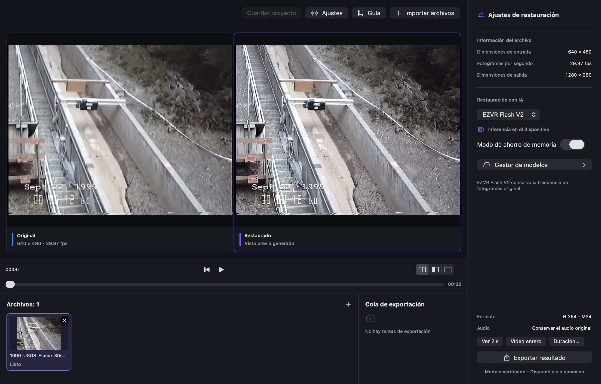
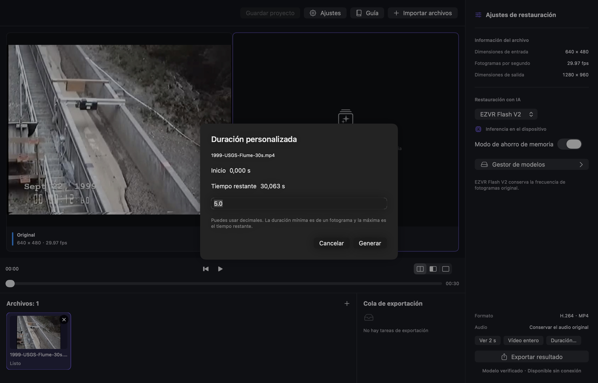
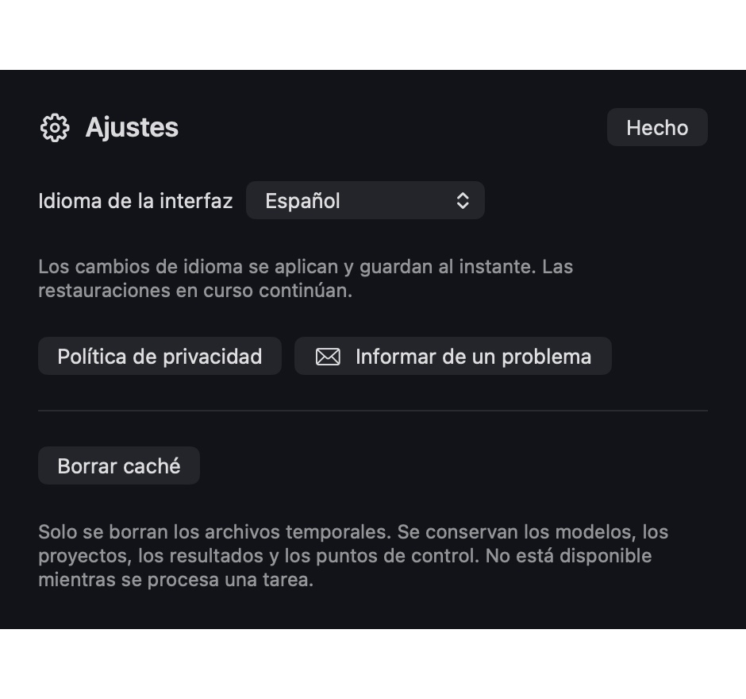

Comprueba antes de procesar
Genera una vista previa de un fragmento de dos segundos desde el punto que elijas. Comprueba el resultado antes de procesar todo el vídeo.
Elige dos segundos de vídeo para ver cómo quedan los detalles antes de restaurar un fragmento más largo. También puedes restaurar fotos en tu Mac.
Versión 0.0.5 (compilación 6). Requiere un Mac con Apple Silicon y macOS 14 o posterior. Abre el DMG y arrastra EZVideoRepair a Aplicaciones.

Sigue los pasos en la interfaz en español para importar el vídeo, seleccionar los primeros cinco segundos y reproducir el resultado. Se ha acortado la espera. Al final se muestran a la vez el original de 640 × 480 píxeles y la restauración de 1280 × 960.
No se ha podido reproducir el vídeo en esta página. Abrir el archivo MP4
El Servicio Geológico de Estados Unidos (USGS) filmó este experimento en un canal el 22 de septiembre de 1999 para documentar el paso del agua sobre un lecho de sedimentos erosionado. Consultar el archivo original del USGS (en inglés)
Ver la demostración en chino, inglés, español y francés (MP4)
No se ha podido reproducir este vídeo en la página. Abrir el archivo MP4
30,03 segundos · Original de 640 × 480 · 29,97 fps
Oregón, Estados Unidos · 22 de septiembre de 1999
Pausa el vídeo en el mismo fotograma para comparar la textura del agua, las barandillas y los números del reloj. Cambia de versión durante la reproducción para ver el agua en movimiento.
Cada versión restaura los 900 fotogramas del fragmento. V1 exporta a 682 × 512 píxeles y V2 a 1280 × 960.
Grabación original del Servicio Geológico de Estados Unidos (USGS). El fragmento recoge unos 30 segundos del ensayo y se presenta sin sonido. Ver la grabación original · Archivo del USGS (en inglés)
Abre una captura para verla a tamaño completo. La ventana principal y el selector de duración proceden de la demostración en español del experimento en el canal.



Los vídeos y las fotos se procesan en tu Mac. Tras la configuración inicial, puedes trabajar sin conexión.
Menos distracciones, más claridad
Importa, comprueba la vista previa y exporta el resultado con un proceso sencillo, sin complicar tu espacio de trabajo.
Genera una vista previa de un fragmento de dos segundos desde el punto que elijas. Comprueba el resultado antes de procesar todo el vídeo.
Restaura el vídeo completo o indica una duración. Procesa solo el fragmento que necesites.
Prueba un fragmento de un vídeo horizontal o vertical, o abre una foto para ver los detalles de la imagen restaurada.
Al volver a abrir un proyecto guardado, encontrarás tus ajustes y los resultados que ya has obtenido.
Si los archivos y los ajustes coinciden, se reutilizan los resultados ya completados para evitar procesarlos de nuevo.
Los archivos de configuración se descargan en segundo plano. Puedes consultar el progreso, pausar la descarga y reanudarla más tarde.
De tus archivos al resultado
Abre el DMG y arrastra EZVideoRepair a Aplicaciones. Inicia la aplicación y sigue los pasos de configuración.
Importa tus archivos, elige un punto de inicio y comprueba la vista previa de un fragmento de dos segundos.
Elige el vídeo completo o una duración concreta, exporta el resultado o guarda el proyecto para continuar más tarde.
No. Los vídeos y las fotos se procesan en tu Mac. La configuración inicial puede necesitar conexión a internet para descargar archivos.
Actualmente, la restauración solo es compatible con Mac con Apple Silicon. No es compatible con Mac con Intel ni con Windows.
Depende de tu Mac, del material y de su duración. El procesamiento puede tardar bastante más que la reproducción del vídeo. Prueba un fragmento de dos segundos antes de decidir cuánto vas a procesar.
Sí. El proyecto guarda los ajustes y los resultados, y hace referencia a los archivos originales. Copia tanto el proyecto como los originales al nuevo Mac.
Las variantes INT8 y BF16 de V1 y V2 pueden cargar los pesos desde el SSD capa a capa. V1 necesita un perfil de inferencia compatible. En una prueba con un Mac M4 Pro de 24 GB, al restaurar un vídeo de 30 segundos con V2 INT8, el pico de memoria bajó de 12,13 GB a 8,96 GB y el tiempo pasó de 366 a 379 segundos. El modo está desactivado de forma predeterminada.
V1 recorta los bordes que añade y conserva las franjas negras del original. Con el perfil cuadrado de 512×512, puede restaurar fotos y vídeos grandes en bloques solapados. V2 divide en bloques los vídeos que superan el límite de procesamiento por fotograma completo. El límite por fotograma procesado por bloques es de 4096 píxeles por lado y 9.437.184 píxeles en total.
Descargar para Mac (DMG) Abre el DMG y arrastra EZVideoRepair a Aplicaciones. Descargar la versión anterior (0.0.4).
Desde la vista previa hasta la exportación, tu Mac procesa tus vídeos y fotos sin subirlos a internet. Tú decides si compartes el resultado.
Descargar para Mac (DMG)